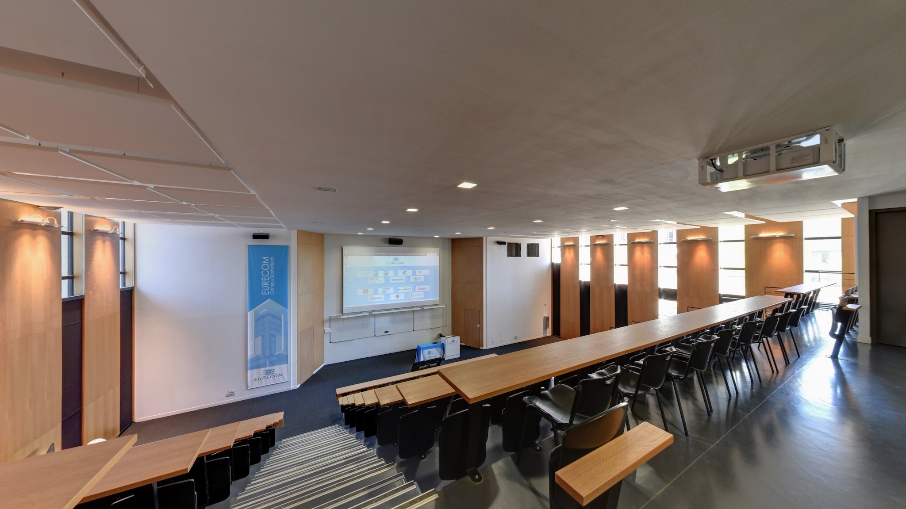
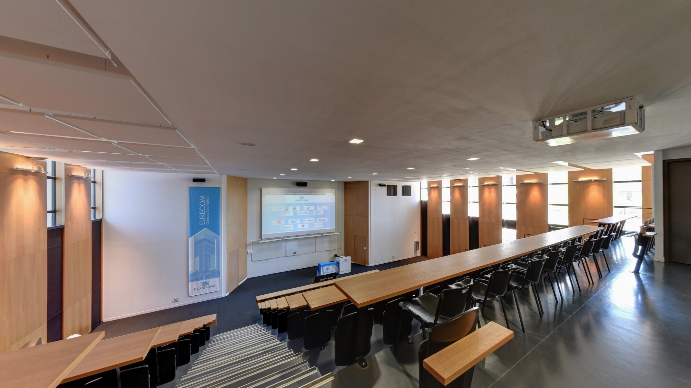

About
The IEEE International Workshop on Biometrics and Forensics is a premier forum uniting industry, academia, and end‑users to showcase cutting‑edge research in multimedia forensics, biometric authentication, surveillance, and forensic science.
Join us April 23–24, 2026 at EURECOM on the stunning Côte d’Azur for the 14th edition of IWBF.
Important Dates
- Paper Submission Deadline: January 31, 2026
- Notification of Acceptance: February 28, 2026
- Camera‑Ready Submission: March 15, 2026
- Workshop Dates: April 23–24, 2026
Partners & Sponsors
News
No news yet…